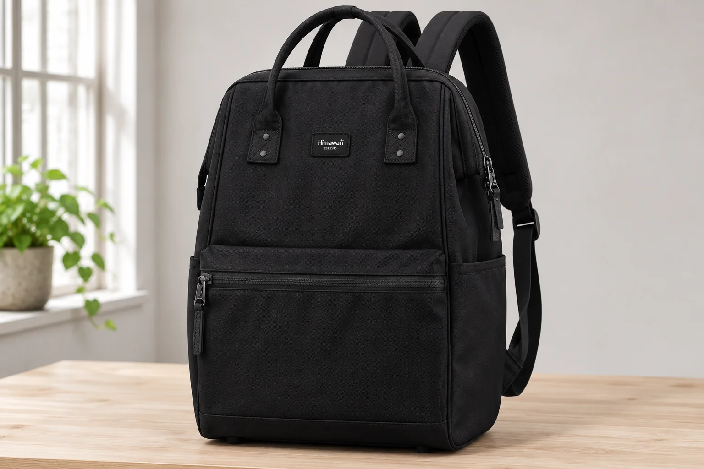
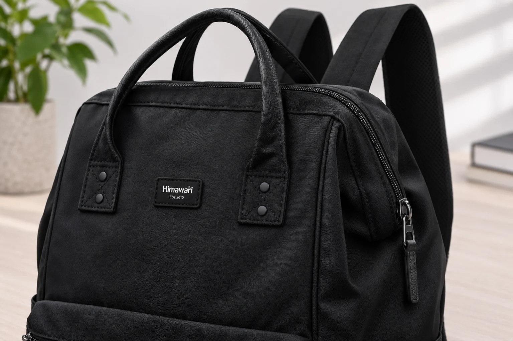
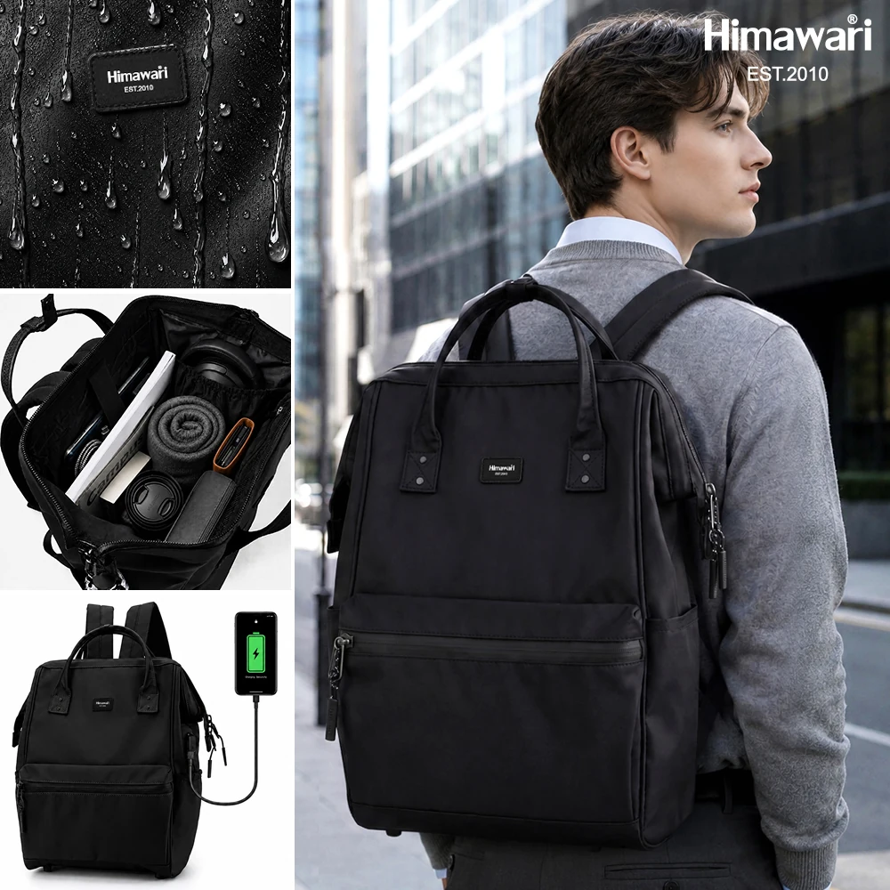

백팩 지퍼를 끝까지 열었는데 두 면이 붙어 있다면

백팩 입구를 넓히려고 지퍼를 끝까지 열었는데 양쪽 천이 한곳에서 이어져 있습니다. 재킷처럼 두 면이 완전히 떨어져야 한다고 생각하면 덜 열린 것처럼 보일 수 있습니다. 하지만 지퍼를 여는 일과 지퍼의 양쪽을 분리하는 일은 다릅니다. 손잡이가 멈춘 자리에서 더 당기기 전에 원래 두 면을 떼어 쓰도록 만든 지퍼인지부터 구별해야 합니다.
가방에서는 지퍼 바깥의 봉제도 함께 봐야 합니다. 지퍼가 크게 열려도 앞판과 옆판이 다른 곳에서 이어져 있으면 몸판 전체가 떨어지지 않습니다. 입구가 넓다는 설명, 지퍼 손잡이가 두 개라는 설명, 두 면을 분리할 수 있다는 설명은 각각 확인할 항목입니다. 이 차이를 알아두면 큰 파일을 넣으려고 가방을 벌릴 때 어느 부분에서 멈춰야 하는지도 분명해집니다.
벌어지는 이빨과 분리되는 끝은 다른 부분입니다
슬라이더는 양쪽 엘리먼트를 맞물리게 하거나 벌어지게 합니다. 손으로 잡는 손잡이는 그 슬라이더에 달린 부품입니다. 슬라이더가 이동하면서 입구가 열리더라도 지퍼 끝을 붙잡는 구조가 남을 수 있습니다. 비분리형 지퍼는 열었을 때에도 아래쪽 끝이 연결된 형태이고, 분리형 지퍼에는 두 줄을 떼었다가 다시 끼우는 데 쓰는 핀과 박스 같은 개방 부품이 있습니다. YKK의 지퍼 구조 안내도 이 구분을 별도로 다룹니다.
여기서 위아래는 지퍼를 설명하기 위한 방향입니다. 백팩에서는 지퍼가 둥근 윗선을 따라가거나 옆으로 내려오므로 끝 부품이 가방의 바닥에 있다는 뜻은 아닙니다. 사진 속 지퍼를 손잡이가 있는 곳부터 따라가 보되 원단 아래로 가려진 끝까지 보았다고 생각하지는 않습니다. 양끝 중 하나가 천 안에 숨어 있으면 부품의 형식은 외관만으로 확인하기 어렵습니다.

입구를 연 뒤에도 이어져 있는 몸판
종이를 두 장 나란히 놓고 가운데를 여는 모습과, 한 장을 접어 만든 주머니의 윗부분을 여는 모습은 다릅니다. 백팩의 앞면과 옆면도 지퍼 외에 봉제선으로 연결될 수 있습니다. 지퍼가 닿는 범위와 몸판이 이어지는 범위를 따로 보면 왜 입구는 벌어져도 가방 전체가 펼쳐지지는 않는지 이해하기 쉽습니다. 지퍼를 더 움직일 수 있는지와 원단을 더 벌릴 수 있는지는 별개의 질문입니다.
실제 가방을 볼 때에는 내용물을 잠시 빼고 평평한 곳에서 입구의 윤곽을 살핍니다. 안내된 개방 범위 안에서 자연스럽게 열리는 부분까지만 봅니다. 양쪽 천이 이어진 곳을 찾으려고 봉제선을 잡아당기거나 끝 부품을 젖힐 필요는 없습니다. 안쪽 덧댐이나 칸막이가 보인다면 그것도 입구와 별개의 연결입니다. 안감이 남아 있다는 이유로 겉 지퍼가 덜 열렸다고 판단하지 않습니다.
가령 입구가 활처럼 휘어 있는 백팩은 지퍼를 연 상태에서도 아래쪽 몸판이 이어져 있을 수 있습니다. 이때 입구의 두 변을 벌리는 각도와 지퍼 손잡이가 이동한 거리는 같은 값이 아닙니다. 천이 자연스럽게 따라오는 범위에서 멈추고, 더 넓게 펼치는 기능이 따로 안내된 제품인지 확인합니다. 가방을 평평하게 펴는 사용법은 큰 지퍼가 보인다는 이유만으로 추가할 수 없습니다.

No.1884의 큰 몸체와 지퍼 끝을 구분해서 보기
No.1884 블랙의 공개 외부 크기는 가로 30cm, 세로 45cm, 폭 20cm입니다. 앞면에는 가로로 긴 포켓이 있고 윗부분의 손잡이와 그 뒤쪽 입구 선을 나누어 볼 수 있습니다. 이 숫자는 닫힌 가방의 외곽을 비교할 정보입니다. 지퍼가 몇 cm 열리는지, 파일을 통과시킬 때 입구가 얼마나 벌어지는지까지 알려주지는 않습니다.
이 글의 사진은 입구의 선을 살펴보기 위한 예시입니다. 공개 원본에서 가려진 끝 부품의 형식이나 안쪽 연결을 확인한 시험 사진은 아닙니다. No.1884에 YKK 지퍼가 쓰였다는 뜻도 아닙니다. 일반 지퍼의 용어를 설명하는 자료와 특정 가방에 실제로 장착된 부품의 정보는 구별해서 읽어야 합니다. 같은 모델명이라도 구매하려는 크기와 옵션이 사진 속 제품에 해당하는지 먼저 맞춥니다.
큰 파일이나 단단한 케이스를 넣고 싶다면 가방의 외부 가로보다 물건이 지나가는 입구를 확인합니다. 입구가 끝까지 열려도 케이스의 모서리가 천과 닿는다면 힘으로 늘릴 단계가 아닙니다. 입구 폭과 개방된 모양을 확인할 내부 사진, 물건의 두께를 포함한 치수가 필요합니다. 외부 폭 20cm를 지퍼가 벌어지는 여유로 바꾸어 계산하지 않습니다.
판매처에 요청할 영상도 이 차이에 맞춰 고를 수 있습니다. 닫힌 가방에서 손잡이를 움직여 입구를 여는 장면과 열린 상태의 양끝을 보여주는 장면을 이어서 요청하면 됩니다. 특정 물건을 억지로 통과시키는 시연보다 어디까지가 본래 열리는 범위인지 보이는 영상이 지퍼 구조를 읽는 데 더 직접적인 자료가 됩니다.
원래 연결과 새로 생긴 걸림을 나눕니다
처음부터 같은 위치에서 두 면이 이어져 있는 것과, 이전에 움직이던 슬라이더가 중간에서 멈추는 것은 다릅니다. 전자는 지퍼와 몸판의 구조를 확인할 문제이고 후자는 원단 끼임이나 손잡이의 이동 상태를 살펴볼 문제입니다. 어느 경우든 더 세게 당겨 분리되는지 시험하면 두 상태를 구별하기가 오히려 어려워집니다. 사용하던 가방이라면 원래 어느 정도 열렸는지도 함께 떠올려 봅니다.
문의할 때는 입구 전체가 보이는 사진에 손잡이가 멈춘 위치를 표시하고 끝 부품이 보이면 가까운 사진을 덧붙이면 됩니다. 예전에는 열리던 곳인지, 새로 받은 제품에서 처음 확인한 상태인지도 짧게 설명할 수 있습니다. 분리되지 않는다는 말만 보내기보다 지퍼의 이동과 천의 연결 중 무엇이 궁금한지 나누면 필요한 답을 받기 쉽습니다. 끝을 떼어내는 수선이나 부품 교체는 해당 제품의 안내를 확인한 뒤 별도로 판단합니다.
일반 구조와 제품 표기의 참고 자료: YKK Malaysia · Structure of a Zipper.